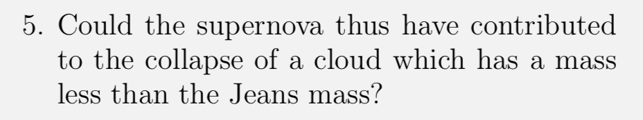

Du må bruke presentasjonsmodus/fullskjermsvisning for å lese denne, men du skal ikke bruke frem/tilbake-knappene, KUN knappene som dukker opp på sliden for å ta deg videre! Ofte må du laste filen ned til maskinen din og åpne den der for å få til dette. Merk at noen knapper vil åpne nettskjema, videoer eller andre ressurser i internettbrowseren din. Når du gjør det riktig, skal du kun se en side av gangen, og når du trykker på knappene som dukker opp på skjermen så skal disse ta deg frem/tilbake i dokumentet. Du vil miste mye læringsutbytte hvis du ser flere slides av gangen. Får du det ikke til, spør foreleser/gruppelærer!
Dette er en erstatning for forelesningen i emnet. Har du gått skikkelig gjennom disse interaktive forelesningsnotatene så trenger du ikke å lese de fulle forelesningsnotatene (med unntak av oppgavene bak). All informasjonen du trenger, får du her. Du kommer til å få mange grublespørsmål og diskusjonsoppgaver, det er meningen at disse skal gjøres i grupper av minst 2, maks 4 studenter. Det er defor sterkt anbefalt at dere sitter sammen i grupper når dere går gjennom disse interaktive forelesningsnotatene, du vil få betydelig mer utbytte av dem på den måten. En god ide kan være å bli enige om å treffes til den faste forelesningstiden og bruke forelesningslokalet som kommer til å være resevert til dette. Hvis du har kommentarer ris/ros til disse forelesningsnotatene eller til emnet, trykk på 🙂 🙁 knappen som du finner på alle sider.
Forrige side Velkommen til del 3B! Vi skal i de følgende delene av kurset følge stjernenes livsløp. I denne delen starter vi med stjernenes fødsel. I den forbindelse trenger vi å bruke en viktig sammenheng for store systemer som kalles virialteoremet. Dette skal gi oss noen uttrykk som sier noe om en gass-sky vil kollapse under sin egen gravitasjon for å danne en stjerner eller ikke. (Illustrasjon: En molekylsky i Orions belte, NASA/JPL-Caltech/UCLA)Neste side
Forrige side🙂 🙁Virialteoremet
Vi har tidligere i kurset utledet analytisk løsningen på 2-legemeproblemet. Så fort vi bare får et legeme til, så er ikke bevegelseslikningene lenger analytisk løsbare. I astrofysikken jobber vi ofte med enorme systemer, f.eks. er det flere hundre milliarder stjerner i en galakse, og enda langt flere gasspartikler i en gass-sky. Hundre-millioner-legeme-problemet er ihvertfall ikke analytisk løsbart. Men vi har tidligere i kurset utledet en generelt analytisk uttrykk som gjelder for slike systemer, nemlig Newtons 2.lov for massesenteret i et system. Virialteoremet er et annet slikt analytisk uttrykk som er gyldig for veldig store systemer. Det er en sammenheng mellom den kinetiske energien og den potensielle for et slikt system. Neste side
Forrige side🙂 🙁Virialteoremet
Det er ikke pensum i AST2000 å utlede virialteoremet, men det er ikke spesielt vanskelig, er du interessert så finner du den fulle utledningen i de vanlige forelesningsnotatene for 3B. La oss bruke en galakse som et eksempel her. Hvis du beregner den kinetiske energien til alle objektene i galaksen og tar gjennomsnittet så får du gjennomsnittlig kinetisk energi ⟨K⟩ for denne galaksen. Helt tilsvarende: hvis du beregner den totale gravitasjonelle potensielle energien mellom alle objektene i galaksen og tar midlet over alle objektene så får du midlere potensiell energi ⟨U⟩ for denne galaksen. Virialteormet sier at $$\langle K\rangle = -\frac{1}{2}\langle U\rangle$$ for store systemer som er i likevekt. I AST2000 skal vi ikke gå nærmere inn på nøyaktig hva betingelsen for denne likevekten er, det vil normalt være opplagt når du kan bruke denne likevektsbetingelsen. Men generelt kan vi si at for et system som er gravitasjonelt bundet (ikke går i oppløsning) så gjelder teoremet. Vi brukte galakse med stjerner som eksempel, men vi kan like godt bruke en hel gass-sky, der legemene i systemet er gasspartiklene. Det skal vi se på nå. Neste side
Forrige side🙂 🙁Virialteoremet
Vi skal bruke virialteoremet på en molekylær gass-sky bl.a. for å se om en molekylsky vil kollapse fra sin egen gravitasjon og danne en stjerne. Hvis vi nå skal bruke virialteoremet så trenger vi å kjenne ihvertfall enten ⟨K⟩ eller ⟨U⟩. Hvis vi nå antar at gass-skya har form som en kule og at tettheten er den samme gjennom hele gass-skya, altså at den har uniform tetthet, kan du tenke deg hvordan du kunne finne den totale potensielle energien til gass-skya (og dermed ⟨U⟩) ? Altså summen av den potensielle energien mellom alle gasspartiklene i hele skya. Du kan uttrykke den med totalmassen M til skya samt radiusen R. Prøv deg litt frem før du går videre!Neste side
Forrige side🙂 🙁Virialteoremet Et hint: prøv først å finne potensiell energi i et infinitesimalt tynt kuleskall i avstand r. Tenk deg et lite element av gassen med masse dm i dette skallet. Hva er den potensielle energien mellom denne massen og resten av skya? Har den noe potensiell energi med den delen av skya som ligger i et skall på utsiden av r? Og hva med den delen av sky som ligger på innsiden av r? Og hvis du integrerer dette over alle dm i hele kuleskallet? Og dermed over hele stjerna? Prøv deg litt til!Neste side
Forrige side🙂 🙁Virialteoremet Fant du ut av det? Fikk du at total potensiell energi i skya er gitt ved: $$U_\mathrm{TOT}=-\frac{3GM^2}{5R}$$ ???? (og dermed ⟨U⟩ = UTOT/N der N er antall partikler i skya) Hvis ikke, se på utledningen i denne videoen. Denne utledningen det forventet at du kan gjøre på stående fot!Neste side
Forrige side🙂 🙁Hvor kommer solas energi fra? Vi skal nå se på et eksempel for hvordan virialteoremet har blitt brukt.Det var en gang for lenge, lenge siden...Neste side
Forrige side🙂 🙁Hvor kommer solas energi fra?
Nei, vi skal ikke fortelle eventyr her! Før Einstein oppdaget den spesielle relativitetsteorien, visste man ikke hvor solas energi kom fra. En mulig teori var at solas stråler fordi den enda faller sammen på grunn av gravitasjon. Altså at sola enda ikke har nådd hydrostatisk likevekt, gravitasjon vinner enda over gasstrykk og får solas radius til å krympe kontinuerlig. Når en gass-sky kollapser fra sin egen gravitasjon så avgir gasspartiklene stråling i fallet. Gravitasjonsenergi blir omgjort til kinetisk energi i gasspartiklene og til stråling. Finnes det noen måte å teste denne teorien på??? Kan du tenke deg det?Neste side
Forrige side🙂 🙁Hvor kommer solas energi fra?
En måte man gjorde dette på var å tenke som følger:
de visste også den gang fra geologiske undersøkelser at jorda og sola er omkring 4.5 milliarder år gammel.
de visste også på samme måte at luminositeten til sola ikke har endret seg drastisk på denne tiden slik at det er en rimlig antakelse å se at solas luminositet har vært den samme som idag i hele sin levetid.
Energiregnskapet for en gass-sky som kollapser er vel at total kinetisk pluss potensiell energi i skya pluss energien av strålingen den sender ut må være bevart?
Vi kjenner solas nåværende luminositet, altså energi per tid som den sender ut
Kan du nå tenke deg hvordan vi kan teste teorien?Neste side
Forrige side🙂 🙁Hvor kommer solas energi fra? Hva med å bruke luminositeten til sola pluss energiregnskap til å beregne hvor lenge sola har eksistert, og så sammenlikne med den faktiske? Hvordan ville du beregnet solas totale levetid?Jeg har tenkt gjennom hvordan dette kunne gjøres
Forrige side🙂 🙁Hvor kommer solas energi fra? Er du sikker på at du har tenkt nøye etter?lover!
Kan du bruke virialteoremet til å finne solas totale energi mens den enda var en enormt stor gass-sky? Og kan du gjøre det samme for sola idag? (du kjenner solas radius og masse idag) Vil ikke forskjellen mellom disse to være total energi strålt ut i hele solas levetid? Og du kjenner hvor mye som stråles ut per tid? (solas luminositet er L = 3.83 × 1026W). Hvor lenge har sola da eksistert? (ta gjerne en kikk igjen på antakelsene for 2 sider siden)Jeg har tenkt gjennom hvordan dette kunne gjøres
Forrige side🙂 🙁Hvor kommer solas energi fra? Fikk du at solas levetid på denne måten blir omkring 8 millioner år? Og at vi dermed kan konkludere med, som de den gang gjorde, at solas energi ikke kan komme fra gravitasjonsinnfall men at sola må ha en annen energikilde? Hvis du ikke fikk det til, se på denne utledningen som viser hvordan vi kan gjøre energiregnskapet med virialteoremet og dermed anslå solas alder. Denne typen resonnement og denne måten å bruke virialteoremet på bør du ha kontroll på. Neste side
Forrige side🙂 🙁Jeans-grensene Så var vi endelig fremme ved hovedpoenget her. Vil en gassky kollapse fra sin egen gravitasjon eller ikke? På bildet ser du en typisk molekylsky eller GMC (Giant Molecular Cloud). Den kalles dette fordi den i tillegg til hydrogen og helium også har mer komplekse molekyler. Den kan typisk være noen lysår stor og ha en temperatur på mellom 10 og 100K før den begynner å kollapse. Spørsmålet er hva avgjør om denne skya blir en stjerne eller om den bare forblir en sky?Neste side
Forrige side🙂 🙁Jeans-grensene
Hvis skyen er i likevekt, så vil den vel holde seg omtrent slik den er? I likevekt har vi liten eller sakte endring. Skal vi få laget en stjerne eller ti fra gass-skya så ønsker vi nok heller at skyen er bittelitt vekk fra denne likevekten. Men ønsker vi da $$\langle K\rangle < -\frac{1}{2}\langle U\rangle$$eller$$\langle K\rangle > -\frac{1}{2}\langle U\rangle$$ Hva men er du? Trykk her når du har gjort deg opp en mening!
Forrige side🙂 🙁Jeans-grensene
For å få laget stjerner ønsker vi vel at skya skal bli mer bundet? Altså mindre hastighet på gasspartiklene og gjerne nærmere sammen? Det betyr vel større potensiell energi? Og mindre kinetisk?Høres det riktig ut?Trykk her når du har gjort deg opp en mening!
Forrige side🙂 🙁Jeans-grensene
Det må vel bli sånn? Hvis den kinetiske energien til gasspartiklene er veldig stor så vil vel partiklene slippe løs fra tyngdepotensialet til de andre partiklene og dermed får vi ihvertfall ingen kollaps. Dermed må vi ha: $$\langle K\rangle < -\frac{1}{2}\langle U\rangle$$ Vi har allerede et uttrykk for ⟨U⟩: $$\langle U\rangle=-\frac{3GM^2}{5NR}$$ Der N er antall partikler i gassen. Men hva med ⟨K⟩??? Hvis du antar ideel gass med temperatur T, hva blir da ⟨K⟩???Trykk her når du har et uttrykk!
Forrige side🙂 🙁Jeans-grensene
Hvis vi antar ideel gass, så var vel gjennomsnittlig kinetisk energi for en partikkel gitt ved $\frac{3}{2}kT$? La oss videre nå anta at gass-skya er kuleformet med uniform tetthet ρ gjennom hele skya. Temperaturen er T og midlere molekylvekt målt i hydrogenmasser mH er μ. (gå tilbake til del 1E hvis du ikke husker hva midlere molekylvekt er). Med disse antakelsene, kan du nå finne et uttrykk for den minste mulige massen gass-sky må ha for at den skal kollapse å forme stjerner? Uttrykk ulikheten med massen på den ene sida og følgende på den andre sida:
Forrige side🙂 🙁Jeans-grensene Det ble galt! Her gjelder det bare å holde tunga rett i munnen og gjøre regningen riktig. Hvis du har kommet hit for 2.gang uten å få det riktig, ta en kikk på denne videoen .
Forrige side🙂 🙁Jeans-grensene
Flott, det er helt riktig! Hvis du likevel er usikker, ta en kikk på denne videoen . Denne grensemassen vi har kommet frem til kalles Jeans-massen MJ: $$M_J=\left(\frac{5kT}{G\mu m_H}\right)^{3/2}\left(\frac{3}{4\pi\rho}\right)^{1/2}$$ og selv om mange antakelser ingikk i utledningen så viser dette Jeans-kriteriet seg å være et godt kriterium for å vite om en gass-sky er i ferd med å danne stjerner eller ikke. Neste side
Forrige side🙂 🙁Jeans-grensene
På helt tilsvarende måte, kan man nå finne Jeans-radien, som isteden for masse er et uttrykk for en minste mulige radius en sky kan ha for å kunne danne stjerner. Hvis radien er mindre så har vi ikke nok masse og dermed nok gravitasjon for å kunne få til kollaps. $$\langle K\rangle < -\frac{1}{2}\langle U\rangle$$ Nå som du har sett hvordan vi kommer frem til Jeans-massen, så bør du nå få til å komme frem til Jeans-radien helt selv. Du skal altså begynne med samme utgangspunkt som vi hadde for Jeansmassen (gå tilbake og kikk hvis nødvendig). Men denne gangen skal du ende opp med en minste mulig radius R på den ene siden av likningen, og et uttrykk med de samme størrelsene (og ingen andre) på andre siden. Klarer du det?Trykk her når du har et uttrykk!
Forrige side🙂 🙁Jeans-grensene
Hvis du gjorde det riktig, skal du komme frem til: $$R_J=\left(\frac{15kT}{4\pi G\mu m_H \rho}\right)^{1/2}.$$ og altså at: R > RJ som kriterium for kollaps. Hvis du ikke fikk det til, gå først tilbake og se videoen for utledning av MJ. Hvis du med dette enda ikke klarer å komme frem, spør foreleser!. Neste side
Forrige side🙂 🙁Jeans-grensene
Ta en kikk på deloppgave 5 av oppgve 3B.3:  Ser du svaret? Hvis du er usikker, se på denne videoen her. Neste side
Forrige side🙂 🙁Jeans-grensene
Du har nå kommet frem til Jeans-kriteriene som kan brukes for å avgjøre om en gass-sky vil danne stjerner. Hvis Jeans-kriteriet er oppfyllt, vil skya kollapse. Gravitasjon vil trekke gasspartiklene sammen mot massesenteret. Etterhvert øker temperaturen mer og mer ettersom tettheten øker. Når temperaturen i sentrum har blitt stor nok til å starte kjernereaksjoner, får vi en kraftig økning i temperatur og gass-trykk. Da blir gass- og strålingstrykket stort nok til å motstå gravitasjon og vi oppnår hydrostatisk likevekt. Da har stjerna kommet til hovedserien i HR-diagrammet. Vi skal i neste del se på kjernereaksjonene i sentrum av en stjerne. Neste side
Forstå hva virialteoremet sier og hvordan bruke det
Kunne utlede uttrykket for total potensiell energi i en kuleformet uniform kule.
Kunne bruke virialteoremet til å kunne utlede Jeans-kriteriene
Flott hvis du nå kan klikke på smilefjesene over og fortelle hva du synes om dette interaktive forelesningsnotatet. Hva var bra og nøyaktig hva kan forbedres? All ris og ros mottaes med takk!
 Velkommen til del 3B! Vi skal i de følgende delene av kurset følge stjernenes livsløp. I denne delen starter vi med stjernenes fødsel. I den forbindelse trenger vi å bruke en viktig sammenheng for store systemer som kalles virialteoremet. Dette skal gi oss noen uttrykk som sier noe om en gass-sky vil kollapse under sin egen gravitasjon for å danne en stjerner eller ikke.
Velkommen til del 3B! Vi skal i de følgende delene av kurset følge stjernenes livsløp. I denne delen starter vi med stjernenes fødsel. I den forbindelse trenger vi å bruke en viktig sammenheng for store systemer som kalles virialteoremet. Dette skal gi oss noen uttrykk som sier noe om en gass-sky vil kollapse under sin egen gravitasjon for å danne en stjerner eller ikke.